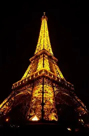

París, Francia
La ciudad del amor es famosa por la Torre Eiffel, sus museos y su arquitectura.
Descubrí lugares increíbles y viví nuevas aventuras
Existen miles de lugares para conocer alrededor del mundo. Estos son algunos destinos que se destacan por sus paisajes, arquitectura y cultura.

La ciudad del amor es famosa por la Torre Eiffel, sus museos y su arquitectura.
Una ciudad fascinante que combina tecnología, tradición y cultura japonesa.
Un destino conocido por sus playas, templos y paisajes tropicales.
Una ciudad con mucha historia, monumentos famosos y una gran diversidad cultural.
El próximo gran viaje puede comenzar con una simple idea.
Preparar mi viaje